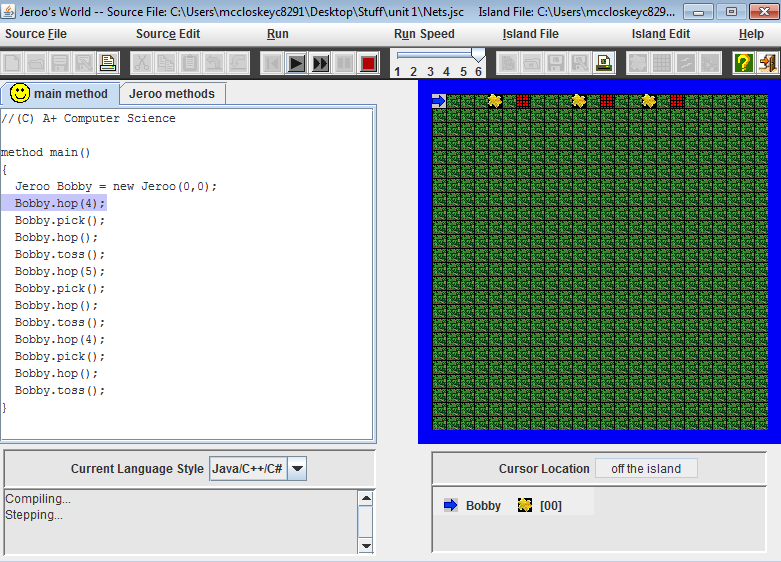
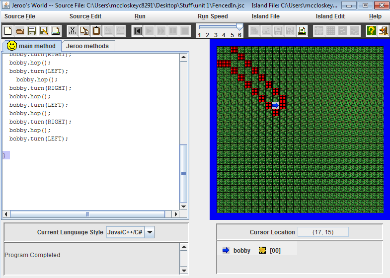
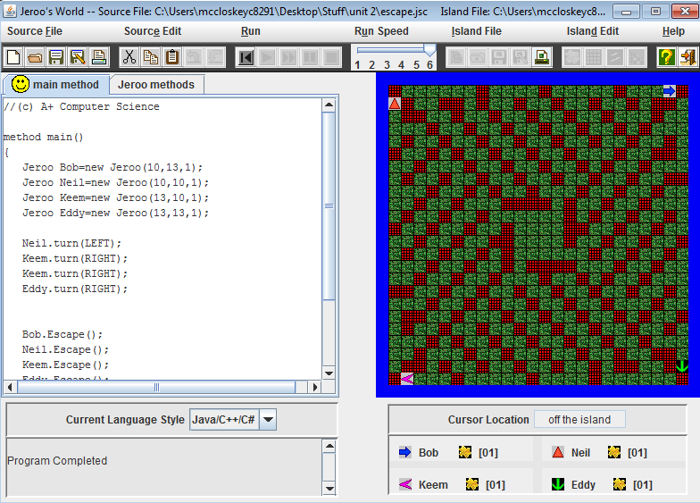
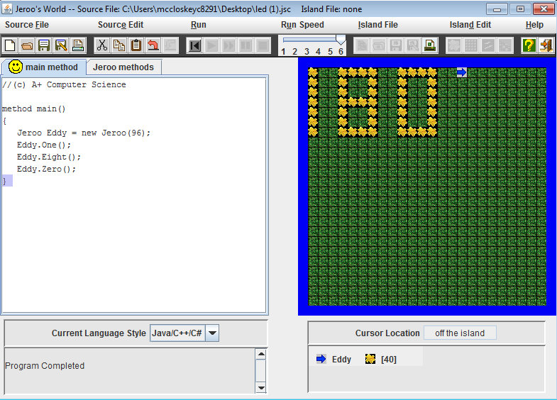
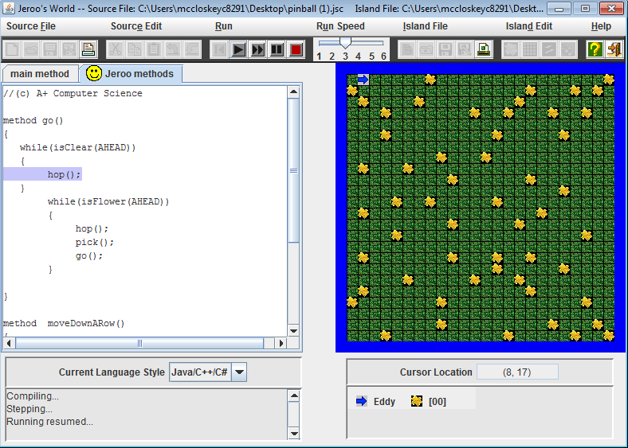
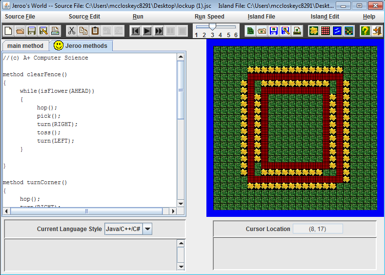
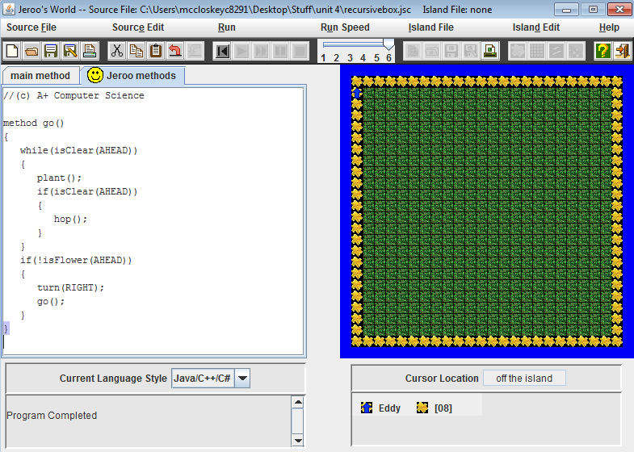
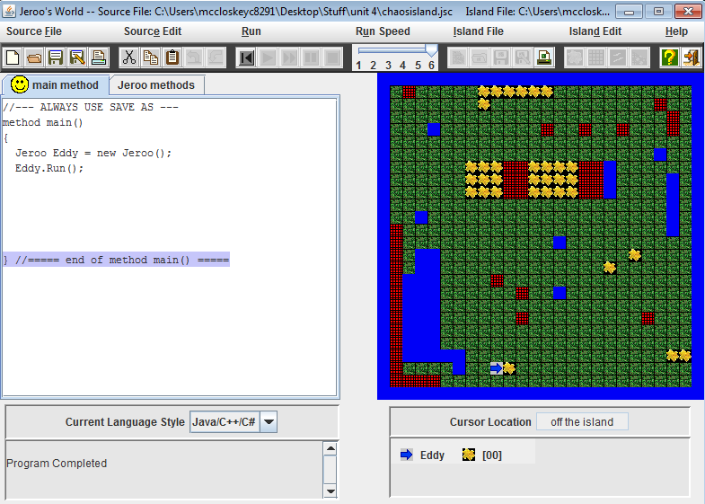

Jeroo Content
Unit 1
Nets

Description
This lab was designed to introduce new commands in Jeroo like tossing flowers. The lab also shows us how items in the the Jeroo universe interact with each other. I learned that flowers can break nets and that if you step on a net your Jeroo will die. If you made your code correctly, the Jeroo would break all of the nets and stop.
Concepts Learned
- How objects interact with each other
- Using flowers to get rid of the nets
Fenced In

Description
In this lab, we were tasked with making the Jeroo navigate the maze of nets and stop at the end. We learned how to be precise with the movements as any mistake would make the Jeroo die. This lab gave us a better understanding on how to make the Jeroo move exactly where you want it to go.
Concepts Learned
- Making the Jeroo hop and turn to avoid nets
Unit 2
Great Escape

Description
In this lab, we were tasked with making the Jeroos escape the maze. We had to create a method that would allow the Jeroos to escape the maze and stop at the end. Once we created the method we were able to have the other Jeroos use this method so that they could escape.
Concepts Learned
- Creating methods
- Having multiple Jeroos use one method
LED

Description
In the LED lab, we had to create multiple methods for different numbers in order to create any 3 digit number. Each digit had to have their own method and within those digits I used more methods to stream line the process. This lab was very difficult and tedius due to the amount of code needing to be written.
Concepts Learned
- Writing multiple methods
- Having a method within a method to make code shorter
Unit 3
Pinball

Description
In this lab, we were tasked with collecting all of the randomly scattered flowers around the island. We had to create a loop and two methods so that the Jeroo would run around the island and collect the flowers. The hard part of the lab for me was getting the Jeroo to go down to the next row and start the loop over again.
Concepts Learned
- Creating a loop
- Calling methods within a loop
- Stopping the loop when the task is finished
Lockup

Description
In this lab, we were tasked with breaking three Jeroos out of jail. One Jeroo on the outside had to start by breaking the fences around the other Jeroos using the given flowers. Once the Fences were broken, the other Jeroos would follow in making a break for it to the East and escape.
Concepts Learned
- Putting loops within a method
- Running loops multiple times
Unit 4
Recursive

Description
In this lab, we were tasked with creating a box that spanned the whole outer perimeter of the island. I used a loop to run multiple methods within the loop so that the Jeroo would know when to turn and when to plant a flower as well as when to stop. The hardest part of this lab was getting the Jeroo to stop and he would keep going around and around creating a spiral instead of a square.
Concepts Learned
- Putting multiple methods within one loop
- Stopping the loop from running forever
Chaos Island

Description
In this lab, we were given certain conditions that we needed to use in order to complete the task. The task was to have the Jeroo run around avoiding obsticles and eventually end up facing East in front of a flower. I had to use multiple if else statements in order to get the program to work. The if else statements helped as if none of the pre set conditions were met, then the Jeroo would just hop forward until the condtions were met.
Concepts Learned
- Using if else statements
- Using if else statements within loops
Final Project